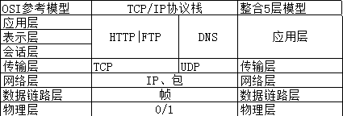

计算机网络基础
- 模型，协议
- IP地址分类
- ARP地址解析协议
- 简单介绍几种协议
- TCP三次握手四次挥手
- 在浏览器输入 www.baidu.com 后执行的全部过程
- TCP和UDP的区别
- TCP对应的协议和UDP对应的协议
- DNS域名系统，简单描述其工作原理
- 面向连接和非面向连接的服务的特点
- 了解交换机，路由器，网关的概念，用途
OSI参考模型、五层协议

封装过程
应用层 上层数据
传输层 TCP → 上层数据 → 数据段或消息
网络层 IP头 → TCP + 上层数据 → 数据包
数据链路层 MAC头 → IP头 + TCP + 上层数据 + FCS → 数据帧
物理层 0101110101001000010 → 比特流
每层协议如下
1 |
|
每层作用如下：
| 应用层 | 允许访问OSI环境的手段（应用协议数据单元APDU） |
|---|---|
| 表示层 | 对数据进行翻译、加密和压缩（表示协议数据单元PPDU） |
| 会话层 | 建立、管理和终止会话（会话协议数据单元SPDU） |
| 传输层 | 提供端到端的可靠报文传递和错误恢复（段Segment） |
| 网络层 | 负责数据包从源到宿的传递和网际互联（包Packet） |
| 数据链路层 | 将比特组装成帧和点到点的传递（帧Frame） |
| 物理层 | 通过媒介传输比特，确定机械及电器规范（比特Bit） |
IP地址分类
IP地址是32位的二进制数值，用于在TCP/IP通讯协议中标记每台计算机的地址。
每个地址分为两部分。网络部分和主机部分：前者表示其网络所属编号，后者表示该网段中该主机的地址和地址编号。按照网络的规模大小，IP地址可分为A、B、C、D、E五类。
| A类地址 | 以0开头 | 第一个字节范围0~127（1.0.0.0-126.255.255.255） |
|---|---|---|
| B类地址 | 以10开头 | 第一个字节范围128~191（128.0.0.0-191.255.255.255） |
| C类地址 | 以110开头 | 第一个字节范围192~223(192.0.0.0-223.255.255.255) |
私有地址
- 留用的内部私有地址，Internet上没使用的地址
- IP地址与子网掩码相与得到网络号
- 主机号，全为0的是网络号（例如：192.168.2.0），主机号全为1的为广播地址（192.168.2.255）
| A类 | 10.0.0.0-10.255.255.255 |
|---|---|
| B类 | 172.16.0.0-172.31.255.255 |
| C类 | 192.168.0.0-192.168.255.255 |
ARP地址解析协议
地址解析协议即ARP（Address Resolution Protocol），是根据IP地址获取物理地址的一个TCP/IP协议。
- 首先每个主机都会在自己的ARP缓冲区中建立一个ARP列表，是根据IP和MAC地址之间建立的对应关系。
- 当源主机要发送数据时，首先检查ARP列表中是否有对应的IP地址的目的主机的MAC地址，如果有，则直接发送数据，如果没有，就向本网段的所有主机发送ARP数据包，数据包包括的内容有：源主机IP地址，源主机MAC地址，目的主机的IP地址
- 当本网络的所有主机收到该ARP数据包时，首先检查数据包中的IP地址是否是自己的IP地址，如果不是，则忽略该数据包，如果是，则首先从数据包中取出源主机的IP和MAC地址写入到ARP列表中，如果已经存在，则覆盖，然后将自己的MAC地址写入ARP响应包中，告诉源主机自己是它想要找的MAC地址。
- 源主机收到ARP响应包后。将目的主机的IP和MAC地址写入ARP列表，并利用此信息发送数据。如果源主机一直没有收到ARP响应数据包，表示ARP查询失败。
简单介绍几种协议
| ICMP协议： | 因特网控制报文协议。它是TCP/IP协议族的一个子协议，用于在IP主机、路由器之间传递控制消息 |
|---|---|
| TFTP协议： | 是TCP/IP协议族中的一个用来在客户机与服务器之间进行简单文件传输的协议，提供不复杂、开销不大的文件传输服务。 |
| HTTP协议： | 超文本传输协议，是一个属于应用层的面向对象的协议，由于其简捷、快速的方式，适用于分布式超媒体信息系统 |
| NAT协议： | 网络地址转换属接入广域网(WAN)技术，是一种将私有（保留）地址转化为合法IP地址的转换技术 |
| DHCP协议： | 动态主机配置协议，是一种让系统得以连接到网络上，并获取所需要的配置参数手段，使用UDP协议工作。具体用途：给内部网络或网络服务供应商自动分配IP地址，给用户或者内部网络管理员作为对所有计算机作中央管理的手段。 |
TCP三次握手四次挥手
第一次握手：客户端发送syn包(seq=x)到服务器，并进入SYN_SEND(发送)状态，等待服务器确认；
第二次握手：服务器收到syn包，必须确认客户的SYN（ack=x+1），同时自己也发送一个SYN包（seq=y），即SYN+ACK包，此时服务器进入SYN_RECV（接收）状态；
第三次握手：客户端收到服务器的SYN＋ACK包，向服务器发送确认包ACK(ack=y+1)，此包发送完毕，客户端和服务器进入ESTABLISHED（已建立）状态，完成三次握手。
-
说明：
1）SYN和ACK是标志位（0/1）（ACK=1表明ack有效），seq是序列号，ack是确认号。2）给对方的确认方式就是把对方传来的seq+1并赋给ack。
第一次挥手：主动关闭方发送一个FIN，用来关闭主动方到被动关闭方的数据传送，也就是主动关闭方告诉被动关闭方：我已经不 会再给你发数据了(当然，在fin包之前发送出去的数据，如果没有收到对应的ack确认报文，主动关闭方依然会重发这些数据)，但是，此时主动关闭方还可 以接受数据。
第二次挥手：被动关闭方收到FIN包后，发送一个ACK给对方，确认序号为收到序号+1。
第三次挥手：被动关闭方发送一个FIN，用来关闭被动关闭方到主动关闭方的数据传送，也就是告诉主动关闭方，我的数据也发送完了，不会再给你发数据了。
第四次挥手：主动关闭方收到FIN后，发送一个ACK给被动关闭方，确认序号为收到序号+1，至此，完成四次挥手。
-
说明：
1）SYN攻击 用众多伪造ip地址向服务器发送SYN=1（请求连接），让服务器处于**SYN-RCVD状态，但都无法第三次握手（因为伪造ip不存在）
2）4次挥手中的FIN就相当于三次握手中的SYN。
3）序号seq，确认序号ack，确认标志位ACK作用还是一样的，就是确认作用（把seq加上1赋给ack，并把ACK置1）
4）为什么一个3次1个4次不一样？
因为两端的数据并不是同时发送完，所以两端谁发送完数据都需要自己告诉对方一次，并且对方确认一次。
在浏览器中输入www.baidu.com 后执行的全部过程
1、客户端浏览器通过DNS解析到 www.baidu.com 的IP地址220.181.27.48，通过这个IP地址找到客户端到服务器的路径。客户端浏览器发起一个HTTP会话到220.161.27.48，然后通过TCP进行封装数据包，输入到网络层。
2、在客户端的传输层(添加TCP头)，把HTTP会话请求分成报文段，添加源和目的端口，如服务器使用80端口监听客户端的请求，客户端由系统随机选择一个端口如5000，与服务器进行交换，服务器把相应的请求返回给客户端的5000端口。然后使用IP层的IP地址查找目的端。
3、客户端的网络层（添加IP头）不用关系应用层或者传输层的东西，主要做的是通过查找路由表确定如何到达服务器，期间可能经过多个路由器，这些都是由路由器来完成的工作，我不作过多的描述，无非就是通过查找路由表决定通过那个路径到达服务器。
4、客户端的链路层（添加MAC头），包通过链路层发送到路由器，通过邻居协议查找给定IP地址的MAC地址，然后发送ARP请求查找目的地址，如果得到回应后就可以使用ARP的请求应答交换的IP数据包现在就可以传输了，然后发送IP数据包到达服务器的地址。
TCP和UDP的区别
这是传输层的两个协议，先说一下传输层的两大功能：
- 复用：在发送端，多个应用进程公用一个传输层；
- 分用：在接收端，传输层会根据端口号将数据分给不同的应用进程。
传输层和网络层的区别：
- 网络层为不同的主机提供通信服务，传输层为不同应用进程提供通信服务。
- 网络层只对报文头部进行差错检测，而传输层对整个报文进行差错检测。
UDP（User Data Protocol）用户数据报协议
- 无连接
- 不可靠（不能保证都送达）
- 面向报文（UDP数据传输单位是报文，不会对数据进行拆分和拼接操作，只是给上层传来的数据加个UDP头或者给下层来的数据去掉UDP头）
- 没有拥塞控制，始终以恒定速率发送数据
- 支持一对一、一对多、多对多、多对一
- 首部开销小，只有8字节
TCP（Transmission Control Protocol）传输控制协议
- 有连接
- 可靠的
- 面向字节流
- 全双工通信，TCP两端既可以作为发送端也可以作为接收端
- 连接的两端只能是两个端点，即一对一，不能一对多
- 至少20个字节，比UDP大的多
什么是TCP连接
TCP连接是一种抽象的概念，表示一条可以通信的链路。
每个TCP连接有且仅有两个端点，表示通信的双方，且双方在任意时刻都可以作为发送者和接受者。
什么是套接字
一条TCP连接的两端就是两个套接字。
套接字 = IP地址 ：端口号
因此，TCP连接 = （套接字1，套接字2）= （IP1：端口号1，IP2：端口号2）
TCP对应的协议和UDP对应的协议
TCP对应的协议：
（1） FTP：定义了文件传输协议，使用21端口。
（2） Telnet：一种用于远程登陆的端口，使用23端口，用户可以以自己的身份远程连接到计算机上，可提供基于DOS模式下的通信服务。
（3） SMTP：邮件传送协议，用于发送邮件。服务器开放的是25号端口。
（4） POP3：它是和SMTP对应，POP3用于接收邮件。POP3协议所用的是110端口。
（5）HTTP：是从Web服务器传输超文本到本地浏览器的传送协议。
UDP对应的协议：
（1） DNS：用于域名解析服务，将域名地址转换为IP地址。DNS用的是53号端口。
（2） SNMP：简单网络管理协议，使用161号端口，是用来管理网络设备的。由于网络设备很多，无连接的服务就体现出其优势。
（3） TFTP(Trival File Transfer Protocal)，简单文件传输协议，该协议在熟知端口69上使用UDP服务。
DNS域名系统，简单描述其工作原理
当DNS客户机需要在程序中使用名称时，它会查询DNS服务器来解析该名称。
客户机发送的每条查询信息包括三条信息：包括：指定的DNS域名，指定的查询类型，DNS域名的指定类别。
基于UDP服务，端口53. 该应用一般不直接为用户使用，而是为其他应用服务，如HTTP，SMTP等在其中需要完成主机名到IP地址的转换。
面向连接和非面向连接的服务的特点是什么？
面向连接的服务:通信双方在进行通信之前，要先在双方建立起一个完整的可以彼此沟通的通道，在通信过程中，整个连接的情况一直可以被实时地监控和管理。
非面向连接的服务:不需要预先建立一个联络两个通信节点的连接，需要通信的时候，发送节点就可以往网络上发送信息，让信息自主地在网络上去传，一般在传输的过程中不再加以监控。
了解交换机、路由器、网关的概念，并知道各自的用途
1）交换机
在计算机网络系统中，交换机是针对共享工作模式的弱点而推出的。交换机拥有一条高带宽的背部总线和内部交换矩阵。交换机的所有的端口都挂接在这条背 部总线上，当控制电路收到数据包以后，处理端口会查找内存中的地址对照表以确定目的MAC（网卡的硬件地址）的NIC（网卡）挂接在哪个端口上，通过内部 交换矩阵迅速将数据包传送到目的端口。目的MAC若不存在，交换机才广播到所有的端口，接收端口回应后交换机会“学习”新的地址，并把它添加入内部地址表 中。
交换机工作于OSI参考模型的第二层，即数据链路层。交换机内部的CPU会在每个端口成功连接时，通过ARP协议学习它的MAC地址，保存成一张 ARP表。在今后的通讯中，发往该MAC地址的数据包将仅送往其对应的端口，而不是所有的端口。因此，交换机可用于划分数据链路层广播，即冲突域；但它不 能划分网络层广播，即广播域。
交换机被广泛应用于二层网络交换，俗称“二层交换机”。
交换机的种类有：二层交换机、三层交换机、四层交换机、七层交换机分别工作在OSI七层模型中的第二层、第三层、第四层盒第七层，并因此而得名。
2）路由器
路由器（Router）是一种计算机网络设备，提供了路由与转送两种重要机制，可以决定数据包从来源端到目的端所经过 的路由路径（host到host之间的传输路径），这个过程称为路由；将路由器输入端的数据包移送至适当的路由器输出端(在路由器内部进行)，这称为转 送。路由工作在OSI模型的第三层——即网络层，例如网际协议。
路由器的一个作用是连通不同的网络，另一个作用是选择信息传送的线路。 路由器与交换器的差别，路由器是属于OSI第三层的产品，交换器是OSI第二层的产品(这里特指二层交换机)。
3）网关
网关（Gateway），网关顾名思义就是连接两个网络的设备，区别于路由器（由于历史的原因，许多有关TCP/IP 的文献曾经把网络层使用的路由器（Router）称为网关，在今天很多局域网采用都是路由来接入网络，因此现在通常指的网关就是路由器的IP），经常在家 庭中或者小型企业网络中使用，用于连接局域网和Internet。 网关也经常指把一种协议转成另一种协议的设备，比如语音网关。